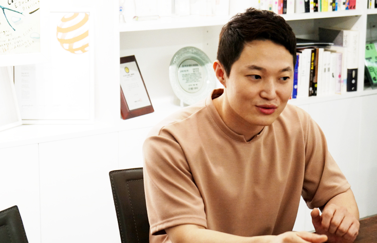

작업 속의 규칙성,
그래픽디자이너 김철홍

▶ 피곤한 기색 없는 그의 유쾌한 목소리는 인터뷰 내내 즐거운 분위기를 자아내었다.
본인에 대한 소개 부탁드립니다.
메타브랜딩이라는 컨설팅 회사에서 그래픽디자이너로 일하고 있습니다. 저는 각각의 컨셉이 가장 효율적인 매체로 표현돼야 한다고 생각해서 제 (작업) 영역을 굳이 제한하지 않아요. 타이포그래피를 베이스로 영상, 지면, 스크린 등 다양한 그래픽 작업을 하고 있습니다.
디자인 가치관이 있다면요?
디자인은 Conception을 전달해야 하고, 이것을 가장 효율적으로 전달하는 방법이 문자라고 생각해요. 그래서 저는 작업 방향에 있어서 타이포그래피 디자인을 추구합니다.
그렇게 생각하게 된 특별한 계기가 있나요?
특별한 계기가 있었던 것은 아니에요. 학부 시절에 시각디자인과 수업을 듣는데 픽토그램이 굉장히 직관적이고 만국 공통어라고 표현하더라고요. 저는 공감하기 힘들었던 것 같아요. 문자가 더 직관적이라는 생각이 들었죠. 타이포그래피가 정보 전달의 확실한 수단이라고 생각했으니까요.
가장 기억에 남는 작품을 소개해주세요.
'그리드 브릭' 이라는 작품인데 여러 개의 큐브를 조합하여 글자를 만들 수 있어요.
'그리드 브릭'을 제작하게 된 동기가 있나요?
처음부터 만들려고 했었던 건 아니었어요. '그리드'라는 영문 서체를 만들었다가 규칙적인 형태를 발견했죠. 그래서 육면체의 각 면에 각기 다른 패턴을 씌워 그것을 돌리거나 조합하면 글자를 만들 수 있겠다는 생각에서 제작하게 되었어요.
글자를 만들려면 몇 개 정도의 큐브가 필요한가요?
한 사람을 기준으로 제약 없이 글자를 만들려면 100개 이상의 큐브가 필요해요 . 몇 개 안되는 큐브로는 만들 수 있는 글자가 한정적이거든요. 단어를 만들려면 보통 (큐브가) 15개 정도 필요하고, 문장을 만들려면 60~80개 정도가 필요해요.
▶ 그리드 브릭(Grid Brick), 개인작업, 2014
작업을 하면서 아쉬운 점은?
제가 추구하는 작업 방향과 비슷한 디자이너를 만나 파트너로써 서로에게 좋은 영향을 줄 수 있으면 좋겠다는 생각을 해요. 심미적인 조형성이나 아름다운 색감을 추구하는 디자이너들은 여럿 만났지만 타이포그래피를 좋아하는 디자이너를 동료로 만나보지는 못했습니다.
요즘 관심 있는 디자이너가 있나요?
비핸스에 'SAWDUST_쏘더스트' 라는 디자이너가 있는데 작업 결과물이 저와 비슷하다는 생각이 들어요. 하지만 저는 초기 작업을 2D로 접근하고, 이 분은 3D로 접근하는 것 같더라고요. 작품과 스타일은 비슷한데 접근 방법이 많이 다르죠.
작업을 할 때, 본인만의 개성은 무엇이라 생각하세요?
제 작업물의 개성은 규칙이고 'Design of Rules'는 제 태그라인입니다. 예전에 셀프 브랜딩을 진행하면서 저의 디자인 기조를 담아낼 수 있는 태그라인을 고민하고 '그리드 브릭'을 포함한 이전 작업들을 돌아본 적이 있어요. 그래픽들이 특정 시스템 혹은 그리드 안에서 변화하며 일간된 규칙을 지켜나가는 것이 보이더라고요. 이런 부분이 다른 디자이너의 작업과 차별화되는 점이라고 생각해요. 하나의 프로젝트는 시작부터 끝까지 일관성을 가져가는 거죠. 공동 작업을 진행하더라도 누가 어떤 부분을 작업하였는지 보이지 않게, 마치 한 사람의 작업인 듯 보이게요.
▶ 규칙성이 드러나는 작품_ CK폰트, 개인작업, 2017
작업을 할 때, 선호하는 칼라?
색이라는 것은 하나의 꾸밈 요소이고 핵심은 형태라고 생각합니다. 자신의 작업에 여러 꾸밈 요소를 더하는 것은 본인 작업에 자신감이 없는 거 아닐까요? 그래서 형태 하나만으로 승부를 걸 수 있는 블랙 & 화이트를 가장 선호해요. 개인적으로도 무채색을 좋아하고요.
올해 하반기 계획은 어떠세요?
얼마 전에 중국에서 메일이 왔어요. 어린아이들의 나무 장난감을 만드는 회사인데, 그 회사에서 '그리드 브릭'을 아이 장난감으로 만들어서 판매하고 싶다고 해서 이런저런 이야기를 하는 중이에요. 프로토 타입을 만들어 보고 단가가 안 맞으면 만들지 않을 수도 있겠지만 기대하고 있어요. (웃음) 하반기에 이런 부분을 커뮤니케이션하면서 진행할 것 같습니다.
타이포그래피 서울에 소개되면 좋을 것 같은 작가를 그 이유와 함께 추천해주세요.
요즘은 예전과 다르게 웹상에서 레퍼런스를 쉽게 찾을 수 있고, 대부분의 디자이너가 트렌드를 따라가면서 작업을 하게 되는 것 같아요. 작업물만 보고 누구 작업인지 알기가 힘들죠. 하지만 이 디자이너는 다른 것 같습니다. 작업 하나하나에 본인의 색과 생각을 담고 있어요. 비메오에서 처음 이 분의 영상을 봤을 때 충격이 아직도 잊히지 않습니다. 황제연 디자이너를 추천합니다.